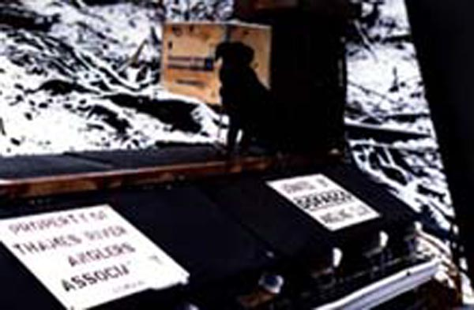
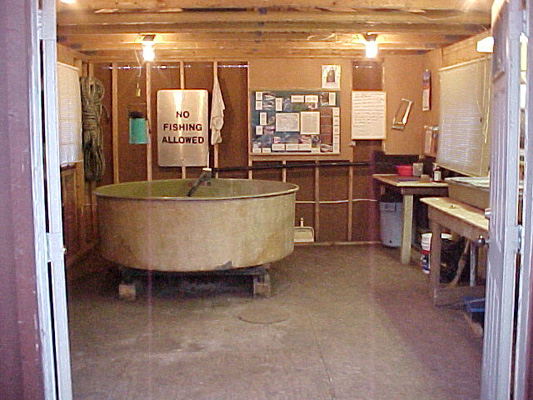
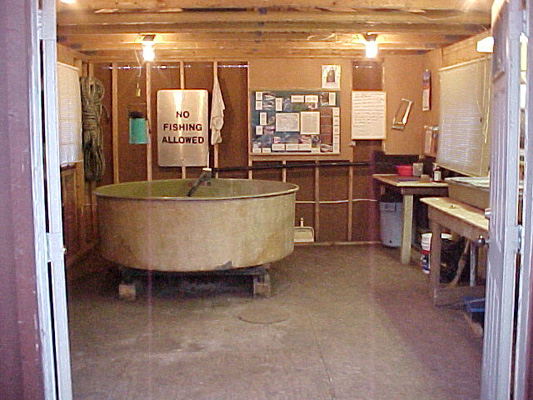
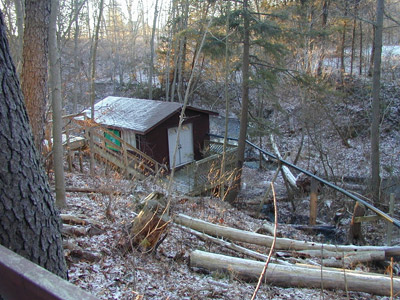

Main Header
Header Images


Header Logo
Header Images


TRAA Projects
"Hands-on Environmentalism" is what we do ...
This is what sets the TRAA apart from other clubs and organizations. You'll find us right in the water clearing obstructions from streams, measuring returning salmonids & taking scale samples for DNA analysis, education through trout hatchery tours & stream walks, being a voice for the Thames River watershed & its inhabitants and the list goes on.
TRAA Salmon ID Monitoring Spring 2012
Here's an overview of what happened over a few weekends in the Spring of 2012 when TRAA members and personnel from the Upper Thames River Conservation Authority (UTRCA) waded in for Year 3 of our 5-year Salmonid Tagging and Monitoring Program. Jon George, an MNR biologist from Thunder Bay who is helping us out with this project, compiled the comparative results of 2010 (Year 1) and 2011 (Year 2) and 2012 (Year 3) in an easy-to-understand report.We'll be doing it all over again during the spring of 2013 for Year 4.


Trout Hatchery
The TRAA Trout Hatchery began in the mid-1980's as an outdoor upwelling box located adjacent to Komoka Creek on private property. While it was a simple and rustic affair, the TRAA enjoyed incredible egg hatching and fry survivability rates for several seasons.
The picture on the left shows the front of the upwelling box with the individual outlets for each segregated cell emptying into a trough running along the front of the box. The shot on the right shows the back of the upwelling box with the spring source supply pipe feeding each separate valve for every cell. The stainless steel tank in the background was re-purposed from a milking operation into a fry holding tank.The box on the top of the tank housed the automatic feeder.
While this setup served us well it was also very challenging to maintain. We had to pack the upwelling box with straw bales (see picture above right) to keep the water in the cells from freezing. Members of the Trout Hatchery Rotation had to huddle over each cell picking eggs in wind-driven rain, sleet and snow. Something had to be done so a new setup was housed in a new enclosure.


Incubation Article
The tray-style of egg incubation in the picture on the left was used for many years after the enclosure was built. It had its faults but as you can see, the comfort level for the egg pickers was beyond compare. The picture on the left shows the whole operation with the trays on the right side and the 6' diameter circular growth tank Note the green automatic feeder hanging over the tank. This was of TRAA design and manufacture and outperforms any of the commercial feeders we encountered.
 

The water source originates from an underground spring uphill from the hatchery. The water is collected in an above-ground horizontal cistern that feeds a 4-inch source pipe. The head pressure created by the elevation drop provides all the water required without dependence on pumps and power.
